eFact - Nueva versión Web
Boletín Electrónico Setiembre de 2013
Descripción:
Les comunicamos que estaremos incorporando importantes mejoras a nuestro sitio www.cedeira.com.ar y a continuación pasamos a describir los puntos más importantes.
Comenzaremos con los cambios operativos que afectan a la modalidad actual y a continuación, las nuevas funcionalidades incorporadas.
PRINCIPALES CAMBIOS EN EL SISTEMA
Cambios en el Menú del sistema
Cambios en el ingreso de un Comprobante
Generación automática de Número de Lote
Acciones de la carga de comprobantes
Aspectos de Seguridad y Administración de Usuarios.
Características de la migración a la nueva versión
Consulta de Comprobante (archivo XML / online Interfacturas)
Envío de Comprobante directamente a Interfacturas desde nuestro sitio
Antes tenía el siguiente diseño:
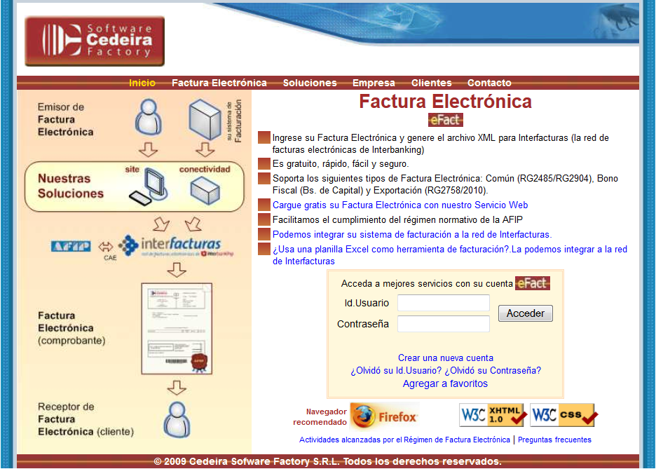
Ahora tiene el siguiente:
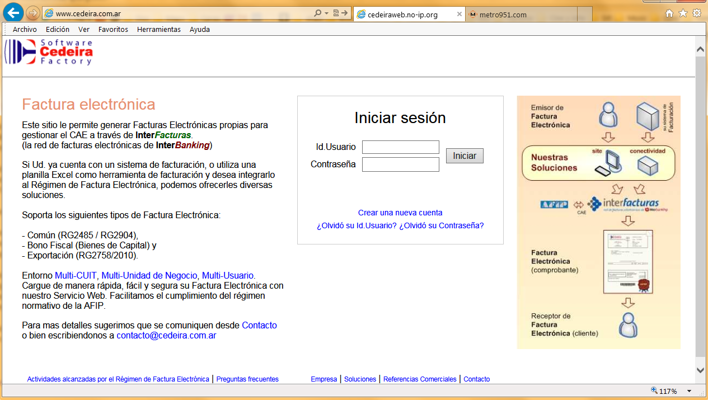
Antes tenía el siguiente diseño →
Ahora el menú tiene las siguientes opciones:
Lo que antes era la opción
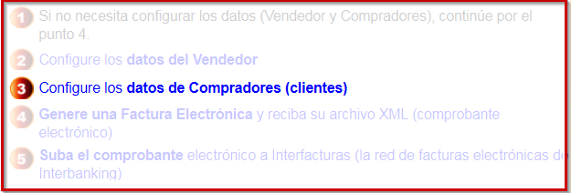
ahora está como primera opción del menú con el nombre “Clientes”.
Lo que antes era la opción
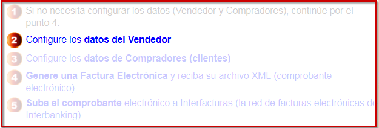
ahora está en el menú dentro la opción de Administración con el nombre de “CUIT”. En está misma área se encuentra la opción de “Puntos de Venta” que antes se encontraba todo junto en la opción “Configure los datos del Vendedor”.
Antes se accedía desde la siguiente opción:
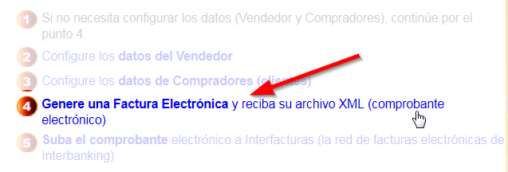
Ahora desde el Menú Principal, con la opción Alta:
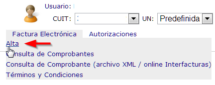
Antes tenía que ingresar el Nro. de Punto de Venta, de la siguiente manera:
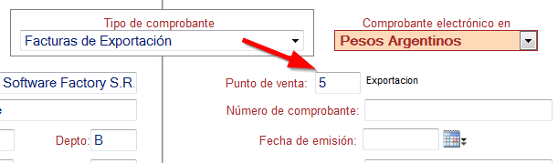
Ahora debe seleccionar únicamente los que tenga habilitados:
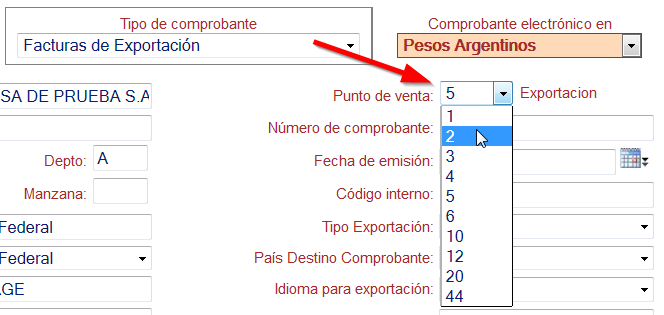
Antes el sistema llevaba un único contador pero en algunos casos el usuario ingresaba en forma manual, un número que representaba al año, mes, día, hora y minutos.
En la nueva versión, se puede configurar previamente al Punto de Venta para determinar el comportamiento del Número de Lote.
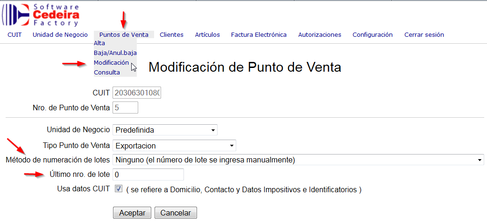
Como método de numeración se pueden seleccionar las siguientes opciones:
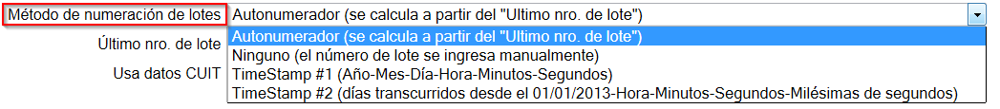
A modo de ejemplo si se selecciona la opción TimeStamp #1 el sistema se comporta de la siguiente manera:
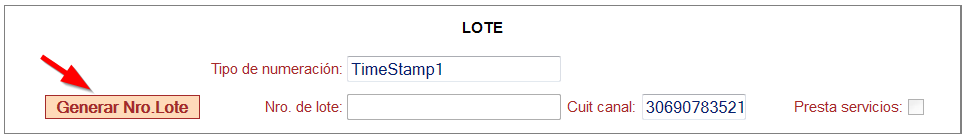
Al hacer clic en botón Generar Nro.Lote.
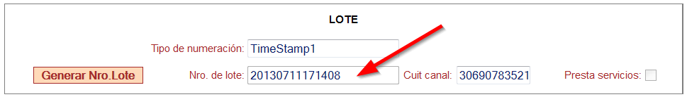
Genera el número según la fecha y hora del sistema.
En la versión anterior disponía de botones con las siguientes acciones:
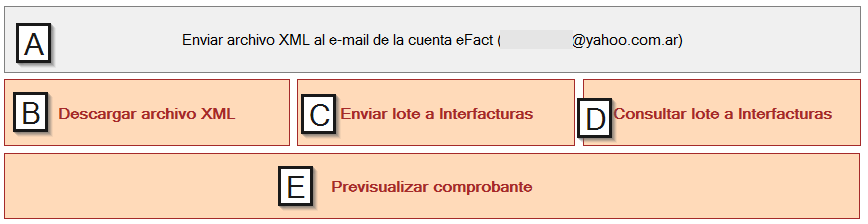
Los botones conservan el mismo texto, pero se visualizan de la siguiente manera:
La opción se accede ahora desde la siguiente opción del menú.
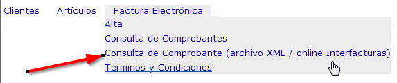
Esta funcionalidad permite consultar desde nuestro sitio, el estado de los comprobantes, directamente contra los servicios online de Interfacturas, evitando utilizar el sitio de interfacturas.
Este punto se describe más adelante.
A partir de una actualización del navegador Internet Explorer versión 10, se detectó una incompatibilidad de un componente de nuestro sitio www.cedeira.com.ar en lo referente al manejo del Menú.
Esta nueva versión resuelve dicho inconveniente, pudiendo utilizar el explorador actualizado.
Actualmente su empresa dispone de una única cuenta de usuario, para operar en nuestro sitio.
La nueva versión permite tener múltiples usuarios y además incorpora algunos cambios, que permiten mejorar la operatividad.
Comprende a la Empresa que va a operar en nuestro sitio. La creación de un nuevo CUIT, genera automáticamente el alta de una Unidad de Negocio por defecto.
Este nuevo concepto permitirá a un mismo CUIT disponer de múltiples sectores o unidades de facturación, que permitan por ejemplo, agrupar y/o administrar Puntos de Venta, grupos de usuarios por Unidad de Negocio.
Este concepto puede aplicarse a las sucursales de su empresa.
Estos estarán asignados a un CUIT y una UN.
Se dispone de los siguientes tipos:
Se establece la siguiente relación jerárquica,
La asignación de permisos y algunas tareas específicas no las puede realizar cualquier usuario, sino aquellos que tengan un perfil de Administrador. Ejemplos:
Una vez solicitado un nuevo permiso por parte de un usuario, un usuario administrador podrá autorizar o rechazar dicho pedido. Para ello deberá ingresar desde el menú principal a la opción “Administración / Explorador de Autorizaciones Pendientes”.
También existe una opción de “Explorador de autorizaciones (histórico)”, que le permite al usuario, ver todas las intervenciones en las cuales participó.
Ejemplo: Cuando un nuevo usuario, desee operar en una empresa y UN existente, deberá solicitar los permisos de operador, y esperar . Estos permisos deberán ser aprobados por un Administrador de la Unidad de Negocio. También podrá solicitar, permisos de administrador UN y/o CUIT.
Para los usuarios actuales, en la actualización a realizar se procederá de la siguiente manera:
Multi-Usuario: A partir de la nueva versión de nuestro sitio, Ud. podrá asignar a más de un usuario para facturar y/o administrar la empresa.
Multi-UN: Aquellas empresas que por ejemplo tengan más de un sector que factura, recomendamos ir abriendo otras unidades de negocio y habilitando los usuarios correspondientes.
Multi-CUIT: Aquellos usuarios que operen para más de una empresa, podrán hacerlo sin inconvenientes, siempre y cuando se encuentren habilitados para operar en cada CUIT/UN.
Cada usuario que requiera un nuevo permiso, deberá solicitarlo y quien tenga el rol de Administrador, podrá visualizar en la opción “Explorador de Autorizaciones Pendientes” las solicitudes y autorizar o rechazar.
Actualmente, cada vez que factura, debe ingresar el código, GTIN, descripción, condición ante el IVA y alícuota, por cada línea de artículo o servicio que incluya en su comprobante. Si bien esta modalidad sigue vigente, hemos incorporado la posibilidad de disponer de una tabla de Artículos, para ser utilizada en el momento de cargar los renglones de sus comprobantes.
Esta funcionalidad la recomendamos para quienes quieran tener una lista de artículos cuyos datos son transcriptos en las facturas en forma repetida.
El sistema guardará los comprobantes descargados desde nuestro Sitio Web, y podrán ser consultados en cualquier momento. Posee un buscador por rango de fecha y también se puede filtrar por cliente.
La información será almacenada corresponderá a los comprobantes generados a partir de la puesta en marcha de la nueva versión de nuestro sitio.
Las facturas podrán consultarse a través del siguiente filtro:
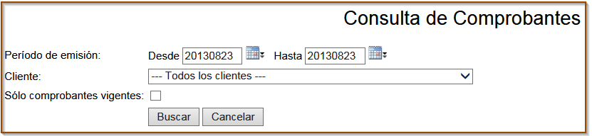
Los comprobantes se visualizarán de la siguiente manera:
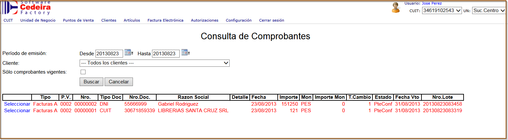
La consulta de comprobante (online Interfacturas), le permite obtener los datos del CAE, una vez que se obtuvo una respuesta satisfactoria en el envío del comprobante.
Aclaración: Esta funcionalidad requiere de la instalación de su Certificado para acceder a los WebServices de Interfacturas. Para tener operativa esta opción, debe solicitarlo previamente .Este servicio tiene un costo adicional.
Esta modalidad le permite enviar un comprobante directamente desde la pantalla de ingreso de facturas, evitando así descargar el archivo XML para luego hacer el upload desde el sitio de interfacturas.
Aclaración: Esta funcionalidad requiere de la instalación de su Certificado para acceder a los WebServices de Interfacturas. Para tener operativa esta opción, debe solicitarlo previamente .Este servicio tiene un costo adicional.
Los cambios descriptos se implementarán al Viernes 06/09/2013 a partir de las 18hs.
Nuestro sitio no estará disponible por un lapso de 3 horas aproximadamente.
Estamos trabajando para integrar nuestro sitio directamente con los servicios de la sin tener la intermediación de Interfacturas.
Esta nueva alternativa será opcional para quienes hoy gestionan el CAE con Interfacturas, y permitirá bajar costos o acceder por ejemplo a personas físicas que hoy no tiene la posibilidad de utilizar los servicios de Interbanking.
INFORMACIÓN ADICIONAL:
Por cualquier duda o consulta, sugerirnos que se contacten a facturaelectronica@cedeira.com.ar
2013 Cedeira Software Factory S.R.L. – Todos los derechos reservados.
www.cedeira.com.ar Tel.: 54.11 4778-1744 E-mail:facturaelectronica@cedeira.com.ar